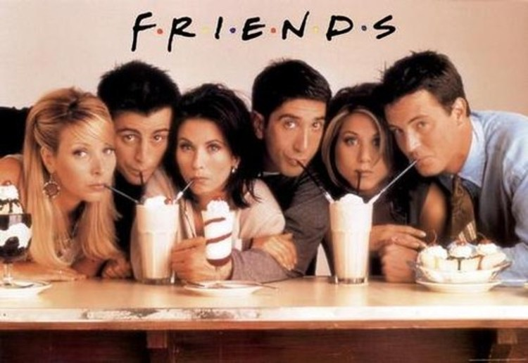
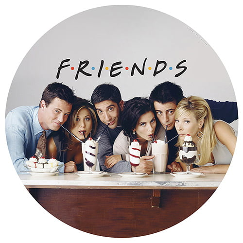
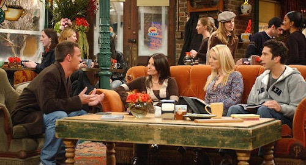
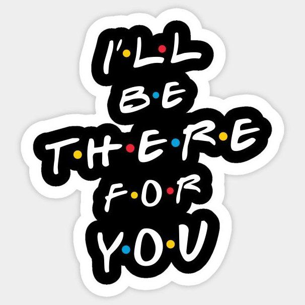

Jennifer Aniston — Rachel Green era uma mulher rica e mimada que, após abandonar o noivo no altar, foi morar com Monica, uma amiga do colegial. O primeiro trabalho de Rachel foi como garçonete no café Central Perk, se tornando, posteriormente, uma vendedora na Bloomingdale's e na Ralph Lauren, na quinta temporada. Vivia uma relação instável com Ross, na qual tiveram uma filha, Emma. Rachel, apesar de ser inicialmente dependente da família, durante o seriado amadurece e passa a ser uma mulher independente. No último episódio da 10ª temporada, desiste de sua viagem a trabalho e passa a namorar novamente Ross.[8] Courteney Cox — Monica Geller, irmã de Ross e chef de cozinha,[9] é obsessiva-compulsiva por limpeza e tem um espírito competitivo.[10][11] Durante a adolescência, era obesa, o que é motivo de lembranças ruins e neuroses. Todos os personagens gostam de se encontrar no seu apartamento. Apesar dos defeitos, ela é a anfitriã-mor da série. Começa a namorar Chandler e se casa com ele na sétima temporada do programa. Na décima temporada, adotam dois filhos por uma barriga de aluguel, uma adolescente que engravidou por acidente e não sabia que teria gêmeos.[12] Lisa Kudrow — Phoebe Buffay saiu de casa aos 14 anos, e foi moradora de rua antes de conhecer seus amigos. Excêntrica e vegetariana, sua mãe se suicidou, e seu pai abandonou a família. Ela e sua irmã gêmea, Ursula, se odeiam. Conheceu seu meio-irmão, Frank, e aceitou ser "barriga de aluguel" para ele. Trabalha como musicista (criando músicas como "Gato Fedorento/Smelly Cat") e massagista. Na temporada final, ela se casa com Mike Hannigan, interpretado por Paul Rudd.[13][14] Matt LeBlanc — Joey Tribbiani é um ator ítalo-americano que se torna famoso por seu papel na telenovela Days of our Lives como doutor Drake Ramoray. Tornou-se companheiro de quarto de Chandler. Possui um cômico raciocínio lento, fome enorme e adoração por pizza. Tenta conquistar toda mulher que aparece em sua frente com sua famosa frase "How you doing?". Nutriu um amor por Rachel que foi superado.[15] Matthew Perry — Chandler Bing foi um processador de dados (emprego esse desconhecido pelos seus amigos) e odiava esse trabalho até que, na nona temporada, ele finalmente teve coragem de se demitir para trabalhar com publicidade (trabalho de que ele gostava de verdade). Ele é o mais cômico dos personagens, e conhecido por seu humor sarcástico.[16] É questionado sobre sua sexualidade e tem um pai travesti, o que aumenta ainda mais os rumores sobre esse tema. Sua mãe é uma famosa escritora de romances adultos. Seu relacionamento mais longo, antes do casamento com Monica Geller, foi com a irritante Janice, eternamente conhecida pela velha e inconfundível frase: "Oh... my... God!". O namoro com Janice finalmente acabou na terceira temporada.[17] David Schwimmer — Ross Geller, irmão mais velho de Monica, é um paleontólogo que ama dinossauros e que se divorciou três vezes durante o seriado: da lésbica Carol (que lhe deu seu primeiro filho, Ben), da britânica Emily (cujo nome ele trocou pelo de Rachel no dia do casamento), e de Rachel (casaram-se bêbados em Las Vegas). Rachel e Ross tiveram uma filha juntos, Emma. É muito inteligente e apaixonado por Rachel desde o colegial.[18]


O Central Perk café, um dos principais cenários da série, inspirou várias imitações no mundo inteiro. Em 2006, o empresário iraniano Mojtaba Asadian iniciou uma franquia do Central Perk e registrou o nome em 32 países. A decoração das casas de café é inspirada em Friends, com réplicas dos sofás, contadores, sinalização de néon e tijolos. As casas de café também contêm pinturas de vários personagens da série e televisões com episódios Friends. James Michael Tyler, que interpreta Gunther, o gerente do Central Perk na série, participou da inauguração do café de Dubai, onde ele trabalhou como garçom. O Central Perk foi reconstruído como parte de uma exposição de museu no Warner Bros Studios e foi mostrado no The Ellen DeGeneres Show em outubro de 2008 e Jennifer Aniston revisitou o set pela primeira vez desde o final da série em 2004.De 24 a 7 de outubro de 2009 uma réplica do Central Perk ficou instalada na Broadwick Street, Soho, em Londres. A casa de café vendeu café real para os visitantes e apresentou uma exposição de adereços de Friends, tais como a Geller Cup do episódio da terceira temporada "Aquele do Futebol Americano".[101] Em 2009, um remix da música "Smelly Cat" se tornou um popular fenômeno da internet. Em Pequim, na República Popular da China, o empresário Du Xin abriu uma lanchonete chamada "Central Perk", baseada no café de Friends.
Primeira temporada
Ver artigo principal: Friends (1.ª temporada)
A primeira temporada introduz os seis personagens principais: Rachel, Monica, Phoebe, Joey, Chandler
e Ross. Rachel chega no Central Perk, após deixar seu noivo Barry no altar e se mudar para o
apartamento de Monica. Ross tenta constantemente dizer a Rachel que a ama, enquanto sua ex-esposa
lésbica, Carol, está esperando seu bebê. Joey é apresentado como um ator lutando por seu espaço,
enquanto Phoebe trabalha como massagista. Chandler termina com a namorada Janice (Maggie Wheeler),
que frequentemente retorna em outros episódios. No final da temporada, Chandler acidentalmente
revela que Ross ama Rachel, que percebe que ela se sente da mesma maneira.[34]
Tom Selleck ganhou a categoria de "Ator Convidado numa Série de Comédia" no Primetime Emmy Award de
2000 por seu papel como Richard Burke
Segunda temporada
Ver artigo principal: Friends (2.ª temporada)
A segunda temporada começa com Rachel descobrindo que Ross está namorando Julie (Lauren Tom), alguém
que ele conheceu em sua pós-graduação. Rachel tenta dizer a Ross que ela também gosta dele, depois
de suas tentativas falhas na primeira temporada, embora os personagens finalmente comecem um
relacionamento. Joey consegue um papel numa versão fictícia da novela Days of Our Lives, mas seu
personagem é morto após ele alegar que escreve muitas das suas próprias falas. Monica começa a
namorar Richard (Tom Selleck), recentemente divorciado e 21 anos mais velho que ela. No final da
temporada, terminam o seu relacionamento, quando eles percebem que ao contrário de Monica, Richard
não quer ter filhos.


I'll Be There For You So no one told your life was gonna be this way Your job is a joke, you're broke, your love life's D.O.A. It's like you're always stuck in second gear When it hasn't been your day, your week, your month, or even your year but... I'll be there for you When the rain starts to pour I'll be there for you Like I've been there before I'll be there for you Cause you're there for me too...